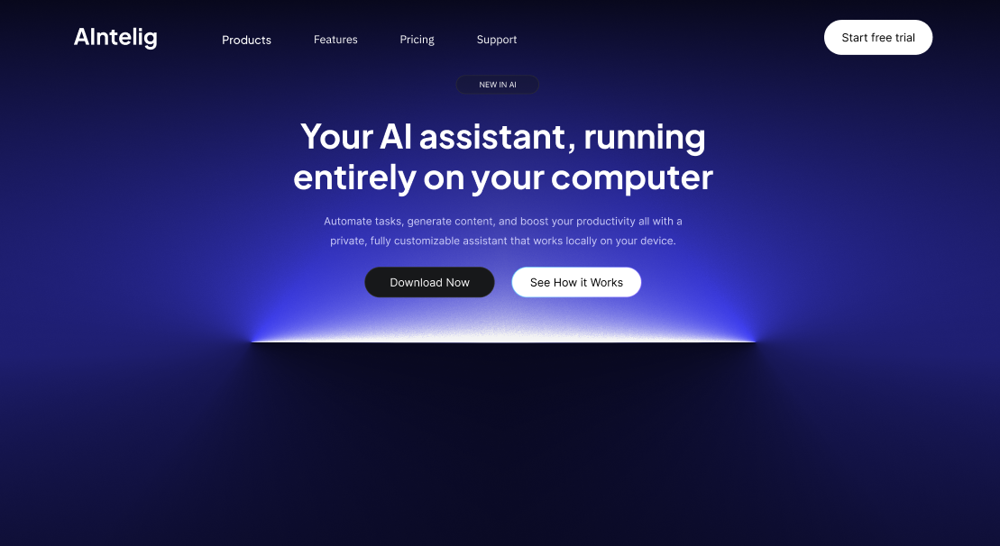
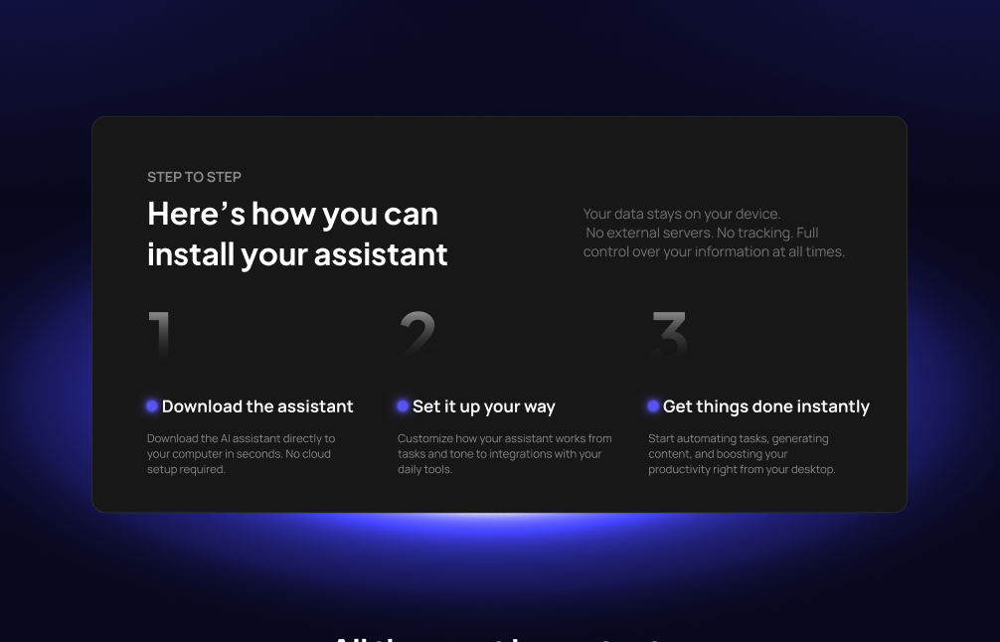
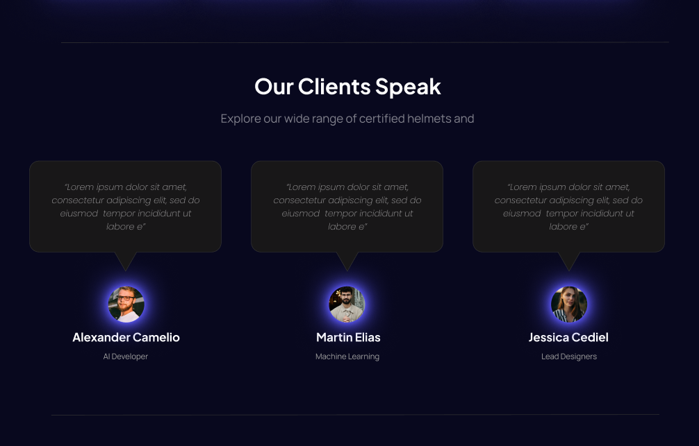
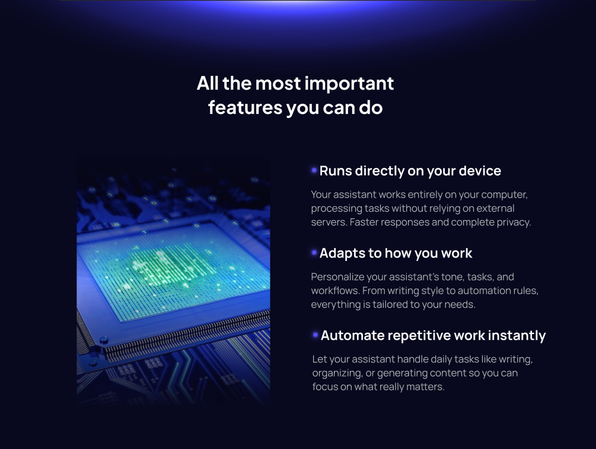
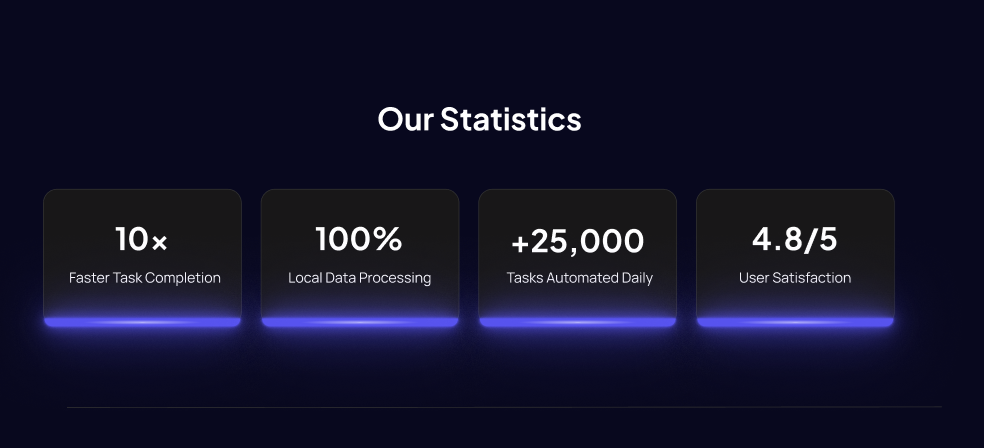
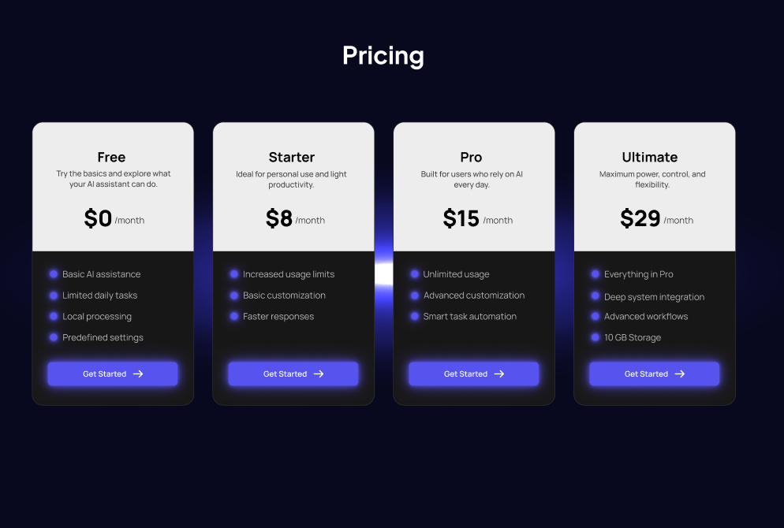
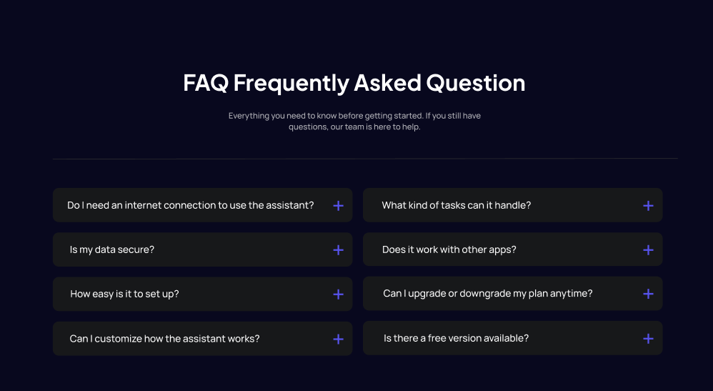
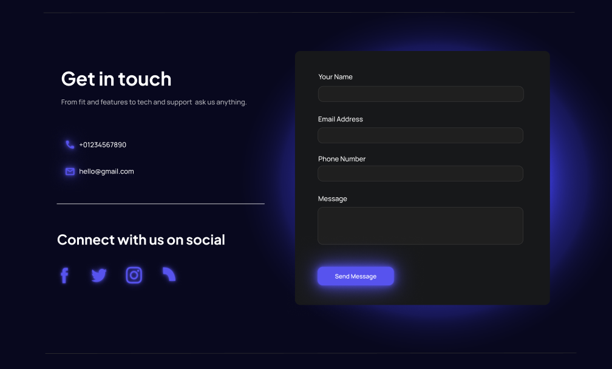

Probelm 1
AI tools can feel complex or intimidating for new users.
The goal of this project was to design a landing page for an AI assistant that users can download and set up on their computer.
A key challenge was communicating how the product works in a clear and approachable way, as AI tools can often feel complex or intimidating for new users. The landing needed to guide users through its functionality and explain it correctly to encourage them to take action.
The project focused on combining a futuristic visual style with a structured layout that simplifies information and makes the experience feel intuitive from the first interaction.
AI tools can feel complex or intimidating for new users.
Users may not understand how the product works or what it actually does.
During the early stages, different layout approaches were explored to find the best way to present the product without overwhelming the user.
Initial ideas included more visually dense sections and experimental compositions, but these made the experience harder to scan and understand. As a result, the direction shifted toward a more structured and step based layout that breaks down the product into 3 digestible and user friendly parts.
The focus became clarity over visual complexity, organizing the content in a way that progressively shows how it works, and their features.

The structure of the landing page was designed to guide users through a clear and logical progression, reducing cognitive load and making the product easier to understand.
The experience begins with a hero section that introduces the AI assistant and sets the overall context. From there, users are guided into a “How it works” section, where the setup process is broken down into simple steps to make the product feel more accessible.
This is followed by a features section that highlights the main benefits, helping users understand the value of the product in practical terms. Then is the Statistics, Testimonials section and FAQ, to create trust. In between the Pricing section was there with clear differences between the plans.

AI tools can often feel intimidating or technically complex for first-time users. Information was progressively grouped into smaller sections for example to explain setup and functionality in a more approachable and digestible way.

Early considerations included a section focused on the broader problem space where AI assistance could help. However, this was removed to avoid introducing unnecessary friction before users understood the product itself. The flow prioritized product understanding and action over additional context.
Consistent button styling, card treatments, and interaction patterns were repeated across sections to create predictability and visual cohesion, making the experience easier to scan and understand.





